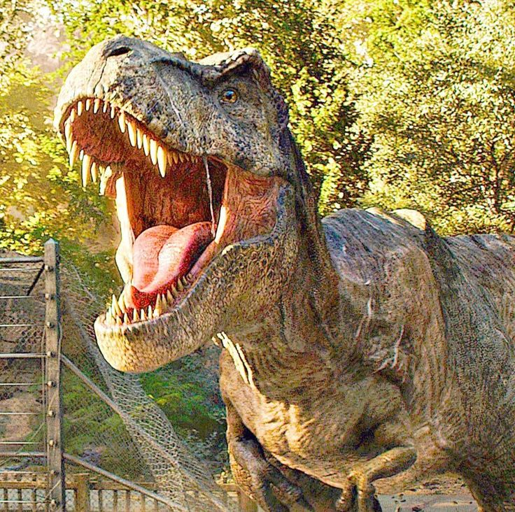

Los dinosaurios fueron los vertebrados terrestres dominantes durante 135 millones de años, desde el inicio del Jurásico, hace unos 200 millones de años, a partir de la extinción masiva del Triásico-Jurásico, hasta el final del Cretácico, hace 66 millones de años, cuando la mayoría de los grupos de dinosaurios se extinguieron durante la extinción masiva del Cretácico-Paleógeno que puso fin a la Era Mesozoica.
vivió a mediados del período Cretácico, hace aproximadamente 99 a 93,5 millones de años,Spinosaurus podría alcanzar longitudes de 15 a 16 metros
Es la única especie conocida del género extinto Oxalaia de dinosaurio saurisquio terópodo espinosáuridos que vivió a mediados en el período Cretácico durante el Cenomaniense, entre 100,5 y 93,9 millones de años en lo que ahora es Sudamérica. Estimaron que este dinosaurio prodia alcanzar la altura de 12 a 14 metro largo.
vivió a mediados del periodo Cretácico superior, hace entre 99 y 97 millones de años, en el Cenomaniense,1 en lo que hoy es la Patagonia Argentina. Se cree que alcanzaba longitudes de entre 12 a 13 metros
Vivió a finales del período Cretácico, hace aproximadamente entre 68 y 66 millones de años, en el Maastrichtiense, en lo que es hoy América del Norte,Tyrannosaurus rex medían entre 11,1 y 13 metros
existió a finales del período Cretácico Inferior, de entre 125 a 100 millones de años, durante el Albiense, en lo que hoy es Norteamérica. llego a medir 12 metros de lomngitud.